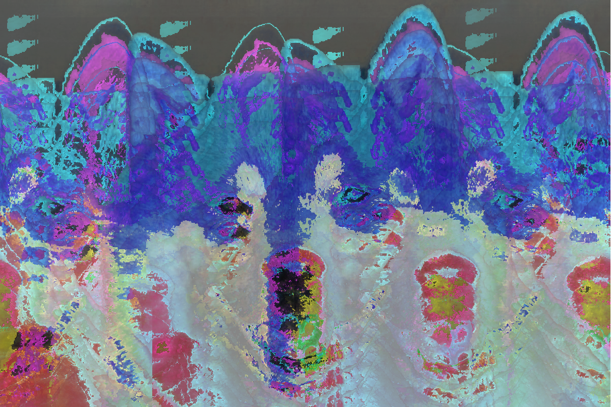
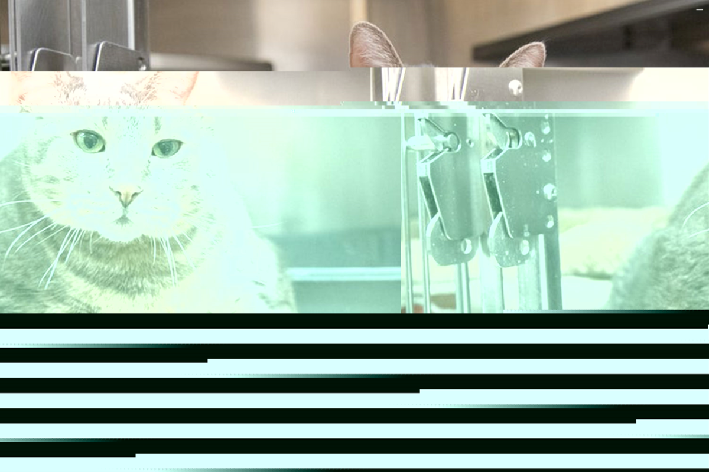
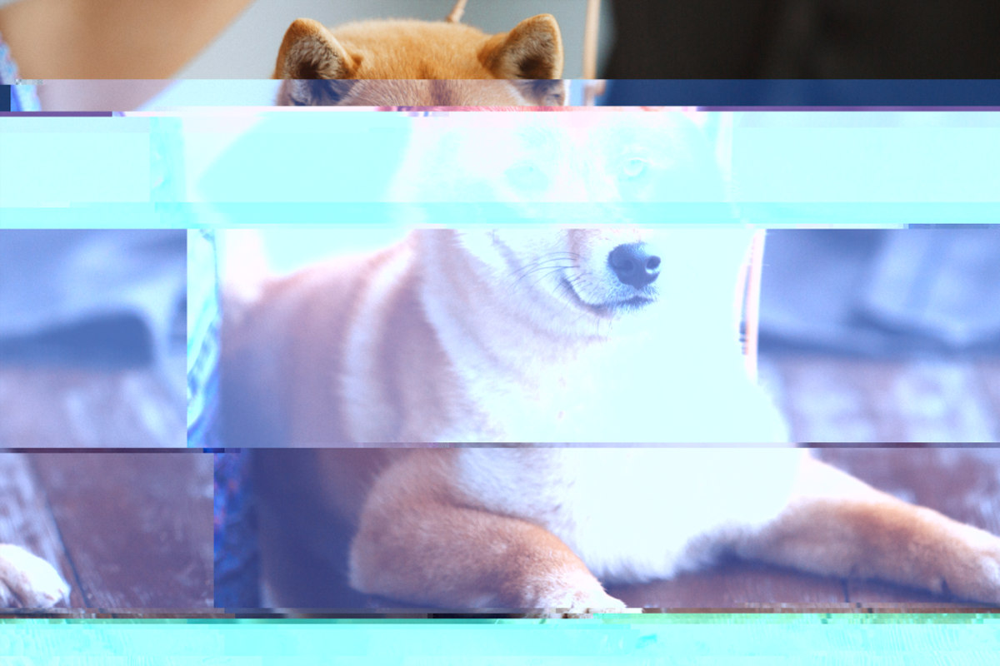
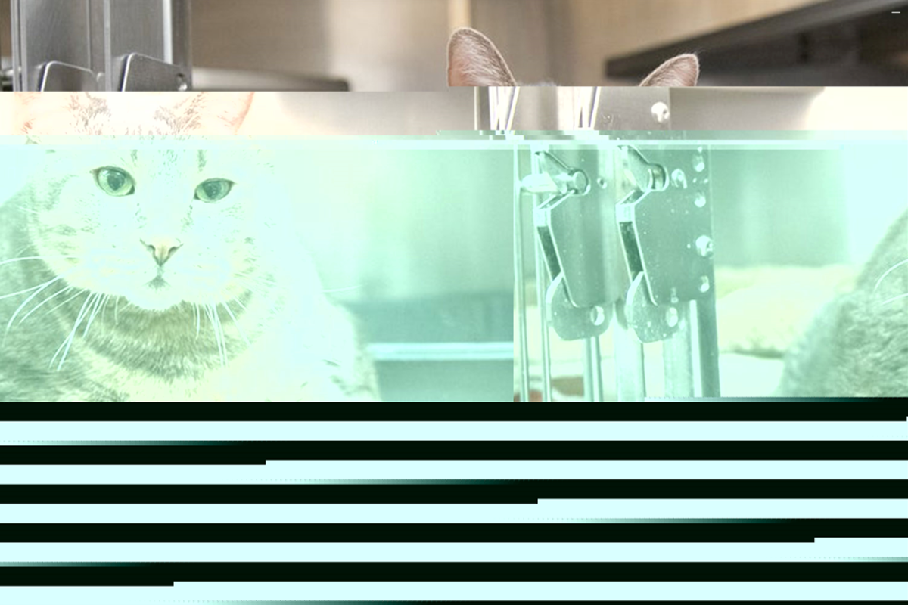

For Your Entertainment
Medium: Data bending and Audacity
Dimension: 1200 x 800
Description:
For Your Entertainment are a series of Glitch Art centered around the premise of suffrage as the cost for entertainment. In this project, the resulting alteration in color and position of the subject were created through the manipulation of the image data. I used popular pets because it draws to the cases where individuals buy/adopt pets without considering the lifestyles and needs of those animals.


×


×


×